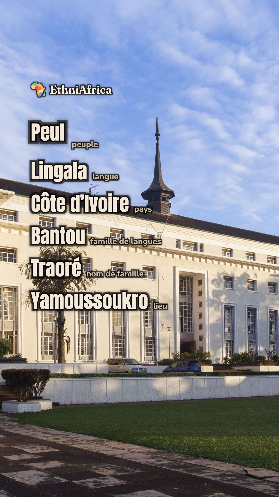
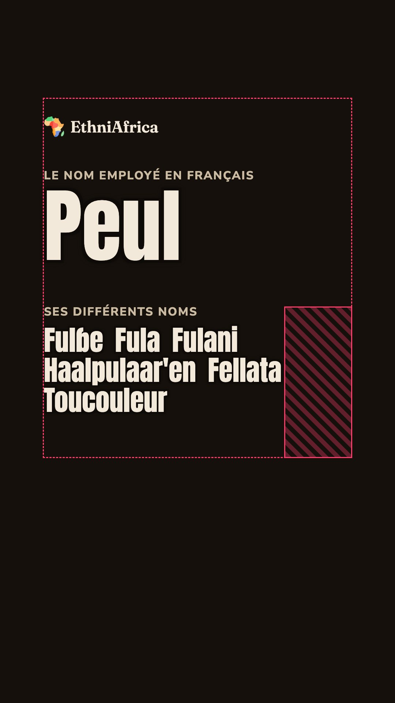
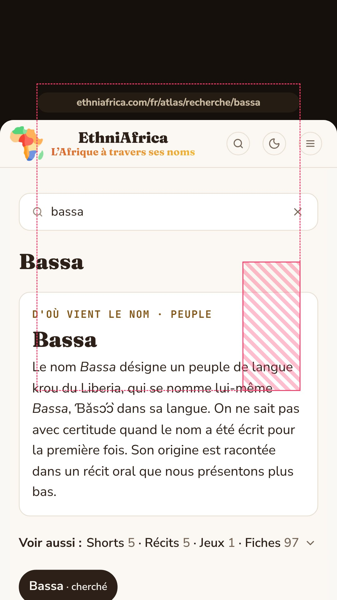
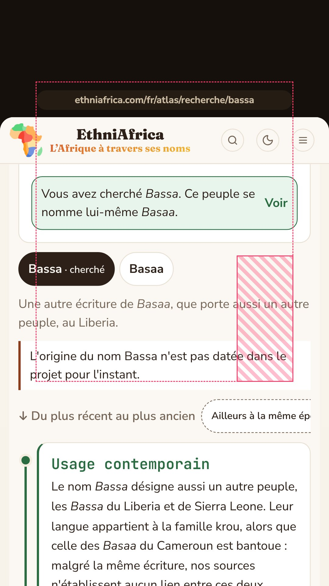
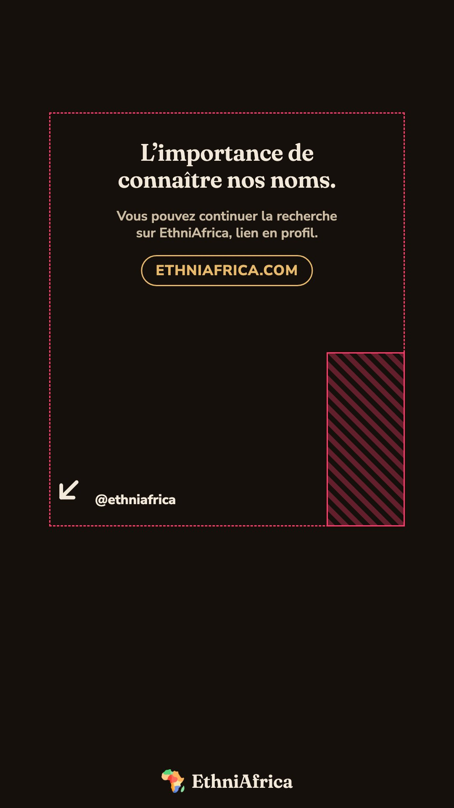
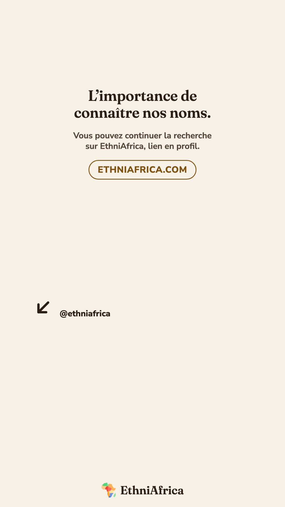

Étape 1 sur 3 · storyboard et style frames
Le générique d'intro et le générique de fin, communs à toutes les vidéos de série d'EthniAfrica. Ce sont des clips muets en 1080 × 1920 à 30 images par seconde : la voix du reel se pose dessus. Chaque image est montrée ici à 430 px de large, la taille d'un téléphone dans le fil.
À valider avant l'animatic · rien n'est animé à cette étape
« Avec EthniAfrica, on part des noms qu'on emploie en français pour mieux comprendre l'Afrique et ses peuples. »


« L'importance de connaître nos noms. Vous pouvez continuer la recherche sur EthniAfrica, lien en profil. »




Minutage estimé sur une voix à 16 caractères par seconde. Il sera recalé sur la piste réelle du reel à l'étape de l'animatic. Une image = 33 ms.
| Images | Secondes | Mot dit | À l'écran |
|---|---|---|---|
| 0–4 | 0,00–0,15 | — | Fond seul : la carte précédente part pendant les 150 premières ms du changement de 300 ms. |
| 5–14 | 0,15–0,45 | « Avec EthniAfrica » | Logo et EthniAfrica entrent en fondu. |
| 29–44 | 0,95–1,45 | « on part » | Libellé « Le nom employé en français ». |
| 44–59 | 1,45–1,95 | « des noms » | « Peul » monte lettre à lettre derrière un masque, 60 ms d'écart. |
| 98–140 | 3,25–4,65 | « pour mieux comprendre l'Afrique » | Les différents noms entrent un à un, 120 ms d'écart, Fulɓe d'abord. |
| 149–165 | 4,95–5,50 | « et ses peuples » | Élargissement de 500 ms : Peul prend la taille des autres en première ligne, cinq noms entrent. |
| 165–180 | 5,50–6,00 | — | Tenue. Les 5 dernières images ne bougent pas, pour le changement de carte qui suit. |
| Images | Secondes | Mot dit | À l'écran |
|---|---|---|---|
| 0–9 | 0,00–0,30 | « L'importance » | Changement de 300 ms depuis la carte « Nous pensons » : la phrase entre dans les 150 dernières ms. |
| 9–66 | 0,30–2,20 | « de connaître nos noms. » | La phrase seule, lue pendant qu'elle est dite. |
| 66–75 | 2,20–2,50 | — | La phrase sort en 150 ms, l'adresse et le téléphone entrent en 150 ms : jamais deux plans à la fois. |
| 75–99 | 2,50–3,30 | « continuer la recherche » | Frappe du nom, une lettre toutes les 4 images. |
| 99–114 | 3,30–3,80 | « sur EthniAfrica » | Appui sur Rechercher, la page de résultat entre en fondu, l'adresse prend le nom. |
| 114–141 | 3,80–4,70 | — | Tenue sur l'origine du nom. |
| 141–162 | 4,70–5,40 | « lien en profil » | Défilement doux de 700 ms vers les formes du nom et leur histoire. |
| 162–171 | 5,40–5,70 | — | Changement de 300 ms vers la fin. |
| 171–210 | 5,70–7,00 | — | Phrase, invitation, pastille du site et repère vers le profil, tenus jusqu'au bout. |
Le spectateur reconnaît le mot qu'il connaît, « Peul », et se sent concerné. Les autres noms arrivent à côté, jamais à sa place : rien n'est barré, assombri ou remplacé. On montre que le nom ouvre sur d'autres noms, sans dire qu'il est faux, colonial ou français d'origine. Un test le vérifie.
Voir et entendre la même chose au même moment aide à la retenir. C'est la règle déjà retenue pour la ligne de signature en 1.6.0.
Un peuple, une langue, un pays, une famille de langues, un nom de famille, un lieu : ce sont les six types de la doctrine. Le spectateur comprend que l'épisode n'est qu'un nom parmi beaucoup d'autres, et donc qu'il y aura d'autres épisodes.
La page est montrée exactement comme elle s'affiche sur un téléphone de 430 px. Ce qu'on voit dans la vidéo est ce qu'on trouvera au bout du lien : la promesse est tenue. C'est aussi la seule échelle où le plus petit texte du site se lit à 12 px.
Un mot qui se complète crée une petite attente : on lit avant la fin. Le mouvement reste local, dans le champ, jamais sur tout l'écran.
La phrase, l'invitation et la pastille occupent la même bande que la fin de série actuelle, de y 318 à 820. On reconnaît la fin parce qu'elle revient toujours au même endroit.
Instagram, TikTok et YouTube Shorts affichent tous le nom du compte en bas à gauche de la vidéo. La flèche dirige le regard vers ce nom, là où se trouve le lien.
| Calque | Générique | Valeur par défaut | Règle |
|---|---|---|---|
name |
Fin | bassa | Le nom tapé et la fin de l'adresse. La page de ce nom doit être en ligne avant la publication. |
result |
Fin | maquette search-bassa-430 | La page de résultat de ce nom. En production : une capture de la vraie page ethniafrica.com/fr/atlas/recherche/<nom> à 430 px, prise le jour du rendu. |
forms |
Fin | 2 pour Bassa, sinon la frise qui a le plus de formes | Quelle frise de noms le défilement montre. |
ground |
Les deux | Fond Nuit |
none pour le master alpha à poser sur l'image de
l'épisode.
|
L'intro n'a aucun calque à changer : elle est identique dans chaque vidéo.